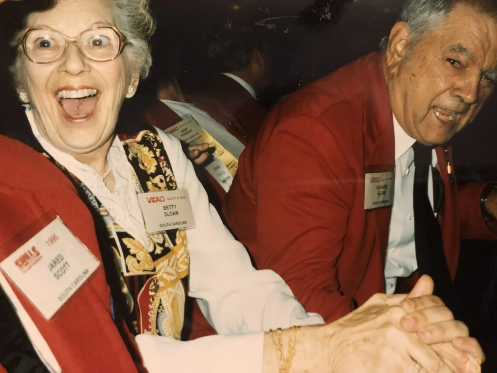
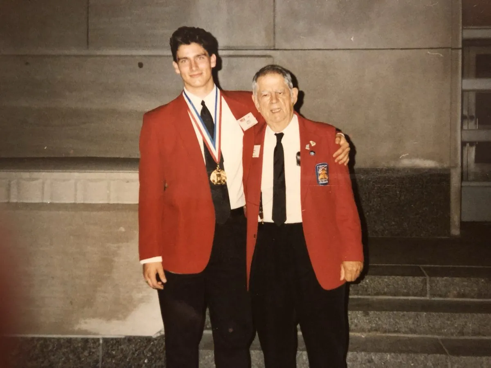

Jared Scott
On Leadership · On Life
On Mentorship
The Last Machinist Who Knows Why
Richard Sloan taught me to run a lathe, then handed me a folded answer sheet and let me choose whether to use it. On mentorship, judgment, and what a plant loses when its last experienced machinist walks out the door.
Picture a shop classroom at R.D. Anderson Vocational School in Moore, South Carolina. I was in the Industrial Maintenance and Technology program, and the man who ran that classroom was Richard Sloan. Everybody called him Mister Sloan. He called every one of us "Dad."
I was about as far from being his father as a person could be. If anything, he was closer to a grandfather. But that was Sloan. Every kid who came through his shop was "Dad."
He taught me how to run a lathe. He taught me how to run a Bridgeport mill. He taught me how to take a piece of material that did not look like much and turn it into something that had to be measured in thousandths of an inch. Before you did any of that, you had to understand the machine, the material, the drawing, and what could happen if you did not pay attention.
That classroom ended up having a lot to do with the direction my life took. I started working in manufacturing in 1995, returned in 1999, became a trainer in 2004, and today I lead learning and development. I have spent most of my adult life around manufacturing, training, and the people who know how to make things work.
But I am not telling you about Sloan because he taught me how to run a lathe.
The Folded Paper
During my junior year, there was a state competition coming up through VICA, the Vocational Industrial Clubs of America. That competition would determine who moved forward for a chance to compete at the national level.
Sloan came to me after class one day and handed me a folded sheet of paper.
"Here's the answers. Now you do what you want. But you got cheated out of it last year."
I had not been cheated out of anything the year before. I was not even his student yet. I still do not completely understand why he said it that way, or what he expected me to do with that paper.
I knew what I was going to do. I folded it back up, and I did not use it.
I placed second at that competition on my own. Thirty years later, that is still one of the proudest moments of my life. Nobody in that building would have known if I had used the paper. I would have known, and that was enough.
The Hallway in Kansas City
The next year, during my senior year, I made it to the national competition in Kansas City. I was eighteen years old, in a hotel full of other eighteen-year-olds who had traveled a long way from home, and that first night they wanted to go out.
Sloan found me in the hallway.
"You can go on out with the rest of them if you want. Or you can go back up to that room and study."
That was it. No speech, no threat, no waiting around to make sure I went back to the room. He left the decision with me.
I went back to the room and studied. I won gold.


I have carried those two memories for more than thirty years. For a long time, I assumed they stayed with me because they were two of the biggest moments of my young life. As I got older and spent more of my own career developing people, I started thinking more about Sloan's part in both stories and about the way he knew when to teach and when to leave the decision with me.
He could have made the decision for me in either case. Instead, he gave me enough responsibility to make the choice myself. Instructions still matter. A person learning a trade needs to know how to set the machine, where to measure the part, what the standard requires, and what can happen when the work is done carelessly. But there comes a point when the instructor cannot keep making every decision for the student.
Eventually the learner has to carry some of the weight. Sloan made me carry it, and that part of what he taught me has stayed with me far longer than the details of operating a particular machine.
He has been gone for more than twenty years, but what he taught me did not disappear when he died. I carried it into manufacturing, then into training, and it still shapes the way I think about developing people.
What We Lose When Nobody Asks Why
We spend a lot of time talking about knowledge leaving our companies. We talk about retirement, the skills gap, labor shortages, and the difficulty of finding people who want to work in manufacturing. Those are real problems. You see them in your plants, your engineering departments, your maintenance groups, and your open positions.
But Sloan reminds me that knowledge does not have to disappear when the person who carried it leaves. Some of his knowledge is still alive in me because he invested it in me while he was here. The problem is that this kind of transfer takes time, and too many companies start thinking about it when the clock has almost run out.
Deloitte and the Manufacturing Institute estimate that American manufacturing may need as many as 3.8 million additional workers between 2024 and 2033. If the current skills and applicant gaps continue, as many as 1.9 million of those jobs could stay unfilled. Numbers that size get distant fast. We put them on a screen, shake our heads, and move to the next slide.
Bring that number down to one plant. It is the position that stays open for six months. It is the department that is constantly short. It is the experienced employee who keeps getting pulled from one problem to another because nobody else is ready to handle the work.
Then somebody new finally walks through the door, and naturally there is relief because the open position has finally been filled. The harder part is remembering that filling the position only gives the company someone with the potential to become capable in the work.
That person did not walk in carrying thirty years of experience. Recruiting gets someone through the door; it does not make that person ready to carry the work. That is where the real skills gap shows up inside a plant: in the distance between having enough people on the payroll and having enough people who can handle the work without leaning on the same few experienced employees every time something gets difficult.
Exposure Is Not Development
A young person comes into the plant and hears, "We don't have time to train you right now. Follow him and watch what he does." The experienced employee may not have asked to become a trainer and already has production to run, but now the expectation is that knowledge will somehow transfer because another person is standing nearby.
Sometimes useful learning happens that way, but often the new employee sees what the experienced person does without understanding why he did it. The experienced person works quickly because the job is familiar. He notices things without stopping to name them, makes an adjustment based on something he learned fifteen years ago, and keeps moving because production still has to run. The job gets done, and it is easy for everyone involved to feel as though training happened even though much of the reasoning never left the experienced person's head.
The weakness in that approach usually becomes obvious when the experienced person is out and the newer employee cannot reproduce the result because he saw the action without hearing the thinking behind it.
Manufacturing does this more often than we like to admit. We confuse exposure with development and assume that watching the job is the same as learning it. The difference becomes important the moment the normal steps stop producing the expected result and the person who was watching has never been shown how the experienced employee thinks through the problem.
The Person Everyone Knows to Find
Bureau of Labor Statistics data puts the median age across American manufacturing at 43.9. In machine shops and turned-product manufacturing, it is 46.9, and about one in four manufacturing workers is 55 or older. Those numbers matter, but most people who have spent time in manufacturing already understand the issue without seeing a chart.
When a difficult problem shows up, somebody says, "Go find him." It may not be the manager or the person with the most impressive title, but everyone knows who to find. He remembers the last time the machine behaved that way, which repair worked and which one did not, and sometimes he notices something is wrong before an instrument confirms it.
When that person is at work, the dependence can be easy to overlook. His vacation is often when people notice how much of the operation still runs through one person's experience.
That is experience, but it is also a warning. If one person is still the only dependable route to an answer, the company does not really own that knowledge. It is borrowing it for as long as that person stays.
Nobody sets out to build a plant around one person. It happens slowly. The capable person keeps getting the harder assignments because he can handle them. When production falls behind, he gets pulled away from training because he can solve the problem faster by doing it himself. After a while, he becomes more valuable and more overloaded at the same time, and we may even reward him for it. We keep rewarding the rescue instead of making time for him to develop somebody who would no longer need rescuing.
Then the retirement conversation begins, and someone says, "Before you leave, we need you to write down everything you know."
He cannot write down what he no longer realizes he knows. That is the nature of becoming good at something. Ask him how he knows a part is wrong, and it may take him a minute to explain. The answer came from hundreds of earlier jobs and failures, not one clean formula.
A binder can preserve the specification. It cannot preserve thirty years of noticing. A surprising number of companies have a knowledge-transfer strategy that depends on retired employees continuing to answer their phones. We laugh because we recognize it, but it should bother us. If we still have to interrupt his retirement every time something unfamiliar happens, we did not transfer his knowledge. We only stretched our dependence past his last day of work.
Information, Skill, and Judgment
Part of the problem is that we use the word "knowledge" for several different things. A torque specification, a tolerance, a drawing revision, and a lockout procedure are information. They should be documented, accurate, and searchable, and we have better tools for that than Sloan had in 1994.
A learning management system can deliver required content. AI can search technical material, compare documents, and help someone ask a better question. Those tools are useful, but information by itself is not capability. A person can read the entire procedure and still be unable to perform the task consistently because skill requires practice.
Judgment takes longer because it is what we rely on when information is incomplete or two indicators point in different directions. It develops as a person makes decisions, sees what happened, receives correction, and gets another opportunity while somebody experienced is close enough to explain what he noticed.
That explanation is where we usually fall short. An experienced person can demonstrate the work while the learner sees only what his hands are doing. Moving the thinking requires somebody to ask what made him look in one place first, what he was ruling out, and what would make him stop. Simple questions like those can pull years of experience into the open instead of leaving it hidden inside a successful repair or a finished part.
The learner also has to make decisions, which can be difficult when production is waiting and the experienced person knows he could finish the job faster himself. Every time he simply takes the tool back, the immediate problem may be solved, but the important part of the knowledge remains with the same person.
Sloan could have ordered me back to my room in Kansas City. I might still have won. But the memory would be different, because the decision would have belonged to him. He left it with me. When I won, I knew I had made the choice that put me in position to win. He allowed me to carry enough responsibility for the lesson to become mine.
That is what we have to create in our plants. Not uncontrolled risk, and not a new employee left alone with work he is not ready for. We give people responsibility in amounts they can carry, while someone experienced stays close enough to prevent a learning mistake from becoming a safety, quality, or customer problem.
AI does not eliminate that need. It can give someone an answer in seconds, but it is not responsible for the machine, the customer, or the person making the decision. It has not watched that employee for six months. It does not know he performs well until production pressure rises and he starts skipping the same inspection. That tells us what AI is for: let it carry the information, and use the time it saves to put knowledgeable people beside people who still need to learn.
Make the "Why" Move Before the Person Does
The practical place to start is with the work itself. Look for the places where too much still depends on one person: the difficult problems that always end up on the same desk, the machine that only one employee seems comfortable troubleshooting, or the department that suddenly feels different when one person takes vacation.
Those are the places where the knowledge is fragile. Do not wait for those people to announce their retirement. Put somebody beside them now, while there is still time for the relationship to become real. That cannot happen only in whatever minutes are left after production. If the experienced person is always pulled away from teaching because he is the fastest hand available, the company has made a decision. It has chosen today's output over tomorrow's capability.
Give them real work to do together. Let the learner watch the troubleshooting, hear the questions, see the experienced person consider one possibility, gather more information, and change direction. Then let the learner try, and ask him what he noticed and why. You are not forcing a speech out of him every time he touches the machine. You are making the reasoning visible often enough that it begins to transfer.
The best technical person is not automatically the best teacher, either. Teaching is a skill of its own, and experienced employees sometimes need help learning how to explain what has become automatic for them, how to ask useful questions without humiliating someone, and when to let a learner work through a problem for another minute instead of taking over.
Then we have to recognize what they contribute. If the only person who gets attention is the one who rescues production, we will keep creating more emergencies for him to rescue. The better contribution is developing another person who no longer needs the rescue, and that should count in performance conversations and in who gets the next opportunity.
Go Find Your Dick Sloan
Dick Sloan has been gone for more than twenty years now. I still hear him call me "Dad." I still think about the folded paper I did not use and the hallway in Kansas City. He never saw where my career would go. He could not have known that one of his students would still be talking about what happened in his classroom more than thirty years later.
More than twenty years after Sloan died, parts of what he put into his students are still here. That is the opportunity companies have with the experienced people working in their plants today, but only if the knowledge has time to move before the person does.
We will lose some things whenever an experienced person leaves. The part we can influence is whether the decisions, patterns, and lessons that shaped his judgment ever became visible to somebody else while there was still time to learn them. Sloan is proof that some of that knowledge can continue long after the teacher is gone.
He taught me how to run machines, and I have forgotten parts of that instruction as the machines changed and my own work changed. What stayed was the way he placed responsibility in my hands and let me carry it. He did not preserve everything he knew in a binder, but he invested enough of himself in people that I am still writing about him more than thirty years later.
Most companies have somebody other people know to find even if teaching is nowhere in his title and he does not think of himself as a mentor.
The responsibility is to identify those people while there is still time, give them room to teach, help them explain what has become automatic, and put someone beside them who is ready to learn. The learner needs real responsibility while the experienced person is still close enough to guide the work, because eventually the goal is for that learner to become the person somebody else knows to find.
Somewhere in a plant today, a younger employee is working beside somebody whose influence may stay with him for decades, just as Sloan's stayed with me.
Find your Dick Sloan while he is still there, and make sure somebody has the chance to learn more than what his hands are doing.
Jared Scott
Author · Leadership & Workforce Development